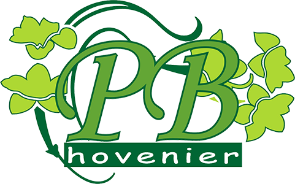

Ik ben Lars Smid.
En ik ben een applicatieontwikkelaar in opleiding.

Ik woon in Hendrik-ido-Ambacht.
Ik ben in 2000 geboren.
Ik zit op volleybal waar ik graag mee bezig ben.
Ook doe ik in mijn vrije tijd werken bij een hovenier en werken bij de McDonalds.
